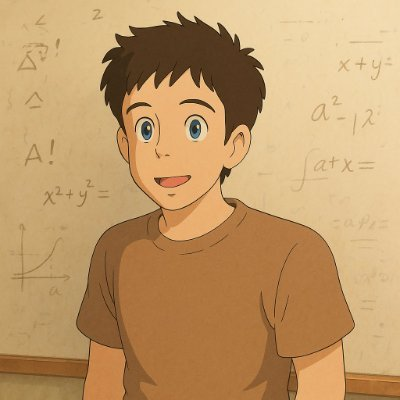

Giornata 2
Creare testi
e immagini con l'IA
Ieri in tre parole
- Prevedere: un LLM (Large Language Model, grande modello linguistico) sceglie il token successivo
- Verosimile: probabile non vuol dire vero
- Frastagliata: bravissimo in un compito, pessimo in quello accanto
Oggi: laboratorio
- Scrivere istruzioni efficaci: il prompt come brief
- Produrre testi, poi immagini, con un chatbot gratuito
- Guardare i risultati con occhio critico, insieme
Regola del giorno: condividiamo istruzioni e risultati
- Ogni risultato si mostra con il prompt che l'ha prodotto
- Gli errori valgono quanto i successi: sono materiale di studio
- Si dichiara sempre lo strumento usato e il livello d'uso (scala AIAS)
Obiettivo e criteri di successo
- Che cosa deve esistere alla fine?
- Come capisco che è riuscito: lunghezza, pubblico, uso
- Senza criteri, il modello sceglie per te: la media
Contesto: chi, per chi, perché
- Chi sei e in che situazione lavori
- Chi leggerà il risultato
- A che cosa serve: decidere, convincere, informare
Vincoli: cosa sì, cosa no
- Lunghezza, lingua, registro
- Che cosa evitare: termini, promesse, dati non verificati
- Meglio dire che cosa fare che che cosa non fare
Formato del risultato
- Elenco, tabella, email, testo pronto da incollare
- Struttura: titoli, sezioni, numero di punti
- Uno schema da riempire vale più di una descrizione
Esempi: l'apprendimento dal contesto
- Apprendimento dal contesto (in-context learning)
- Due o tre esempi del risultato voluto, dentro il prompt
- Il modello imita la forma: anche i difetti degli esempi
Brown, T. B. et al. (2020). Language Models are Few-Shot Learners. NeurIPS
“Agisci come un esperto” non basta più
- Un ruolo generico non migliora le risposte
- Contano obiettivo, pubblico e criteri
- Il ruolo serve se porta un punto di vista preciso
Zheng, M. et al. (2024). When “A Helpful Assistant” Is Not Really Helpful. Findings of EMNLP 2024
File di contesto invece di lunghe spiegazioni
- Allega il materiale vero: brief, linee guida, esempi riusciti
- Il modello lavora meglio sull'originale che sul tuo riassunto
- Attenzione ai dati riservati: ne parliamo giovedì
Fatti fare domande prima di iniziare
- “Prima di rispondere, fammi le domande che ti servono”
- Emergono le lacune del brief
- Rispondi, poi lascia lavorare
Prompt debole
- “Scrivi un post su LinkedIn per il nostro corso serale di fotografia.”
- Per chi? Quanto lungo? Con che tono? Per ottenere che cosa?
- Il modello riempie i vuoti con la media
Prompt forte
- Obiettivo: iscrizioni al corso serale di fotografia (ottobre, 8 incontri)
- Pubblico: principianti tra 30 e 45 anni, a Milano
- Vincoli: massimo 120 parole, niente superlativi
- Formato: tre proposte diverse, ciascuna con un titolo
La lista di controllo del brief
- Obiettivo e criteri di successo
- Contesto e pubblico
- Vincoli e formato
- Esempi o file allegati
Esercitazione — AIAS 1: nessuna IA
10′
Il tuo prompt a colori: ruolo, compito, scopo, pubblico, tono
- Scegli un compito vero del tuo lavoro o del tuo studio;
- scrivi il prompt a mano, su carta;
- evidenzia a colori: ruolo, compito, scopo, pubblico e livello, formato e tono;
- se manca un colore, aggiungi la parte che manca: tutto deve stare in un colpo d'occhio.
Esercitazione — AIAS 4: coinvolgimento completo dell'IA
10′
Dal testo al grafico: trasformalo in un'infografica con un agente IA
- Fotografa o trascrivi il tuo prompt a colori;
- chiedi a un chatbot di trasformarlo in un'infografica: uno schema a colori con le parti del prompt;
- confronta con il tuo foglio: che cosa ha capito, che cosa ha perso?
- correggi con una sola istruzione in più.
02
Far ragionare,
non far indovinare
Catena di ragionamento (CoT, Chain of Thought)
- Chiedere i passaggi intermedi prima della risposta
- 2022: con qualche esempio ragionato, i modelli risolvono più problemi di aritmetica e di logica
- Basta anche una frase: “Ragioniamo passo per passo”
Wei, J. et al. (2022). NeurIPS
Kojima, T. et al. (2022). Large Language Models are Zero-Shot Reasoners. NeurIPS
Tracce di ragionamento: il taccuino del modello
- Tracce di ragionamento (reasoning traces): prima un testo di lavoro, poi la risposta
- Ogni token scritto diventa contesto per il successivo: il taccuino aiuta
- Ma la traccia non sempre racconta come il modello è arrivato alla risposta
Turpin, M. et al. (2023). Language Models Don't Always Say What They Think. NeurIPS
Modelli che “pensano”: livelli di sforzo
- Da settembre 2024 (OpenAI o1) i modelli di ragionamento scrivono una traccia prima di rispondere
- Si sceglie lo sforzo: basso, medio, alto
- Più sforzo: più tempo e più costo, non sempre risposte migliori
La finestra di contesto si riempie
- Istruzioni, allegati, tutta la conversazione: tutto occupa token
- A ogni risposta il modello rilegge tutto da capo
- Il prompt è solo una parte della finestra di contesto
Degrado del contesto (context rot)
- Più testo in ingresso, risposte meno affidabili, anche lontano dal limite
- 2025: 18 modelli messi alla prova, tutti peggiorano con gli input lunghi
- Ciò che sta in mezzo si perde più di ciò che sta all'inizio e alla fine
Hong, K., Troynikov, A., Huber, J. (2025). Context Rot. Chroma
Liu, N. F. et al. (2024). Lost in the Middle. TACL, 12
Compattazione: il riassunto che dimentica
- Compattazione (compaction): a finestra piena, il sistema riassume la conversazione
- Il riassunto conserva il senso generale, perde i dettagli
- A perdersi possono essere proprio le istruzioni iniziali
Buone pratiche: conversazioni brevi, progetti, istruzioni fisse
- Un compito, una conversazione: se cambi argomento, ricomincia
- Progetti: file e istruzioni che valgono per tutte le chat
- Istruzioni fisse: chi sei, come vuoi le risposte
- Conversazione lunga? Chiedi un riassunto e riparti da lì
Cinque cose che un modello fa bene con i testi
- Sintetizzare
- Riscrivere: registro, lunghezza, pubblico
- Strutturare: scalette, tabelle
- Estrarre dati
- Proporre varianti e prime bozze
Esercitazione — AIAS 3: collaborazione con l'IA
10′
Sintetizzare un documento lungo
- Scegli un documento pubblico di almeno dieci pagine: un bando, un rapporto, un regolamento;
- chiedi una sintesi in cinque punti per un pubblico preciso;
- cerca ogni punto nel documento: c'è davvero?
- che cosa manca: la sintesi ha tolto qualcosa di importante?
La storia, con parole nostre
- Mezzogiorno, un autobus pieno. Un giovane dal collo lungo, con un cordoncino al posto del nastro sul cappello
- Se la prende con un vicino che secondo lui lo spinge apposta; poi vede un posto libero e corre a sedersi
- Due ore dopo, davanti a una stazione, un amico gli dice di spostare più in alto un bottone del soprabito
Da Queneau, R. (1947). Exercices de style. Paris: Gallimard; trad. it. U. Eco, Esercizi di stile, Einaudi, 1983
Esercitazione — AIAS 1, poi AIAS 3
13′
Esercizi di stile: una storia, tanti modi (Queneau, 1947)
- Pesca uno stile: telegramma, verbale dei carabinieri, reclamo all'azienda dei trasporti, recensione, oroscopo, ricetta, solo domande, al contrario, sonetto, lipogramma senza «e»;
- riscrivi la storia a mano, senza IA (5′);
- chiedi lo stesso stile a un chatbot;
- poi chiedigli dieci stili in un colpo solo.
Esercitazione
7′
Esercizi di stile: condivisione — e il Tristano di Balestrini
- La tua versione e quella del modello: quale funziona meglio, e perché?
- che cosa imita bene il modello: registri, generi, formule;
- dove cade: lipogrammi, anagrammi, acrostici (vede token, non lettere);
- Balestrini, Tristano: un romanzo combinatorio, 2.500 copie tutte diverse; combinare è capire?
Balestrini, N. (1966). Tristano. Milano: Feltrinelli; ed. integrale Roma: DeriveApprodi, 2007, in 2.500 copie numerate e diverse l'una dall'altra, ricombinate da un programma. Già nel 1961, Tape Mark I: poesia combinatoria con un calcolatore IBM.
Esercitazione — AIAS 3: collaborazione con l'IA
8′
Dal testo alla tabella: estrarre dati
- Prendi un testo con dati sparsi: un articolo, un verbale, cinque annunci di lavoro;
- chiedi una tabella con le colonne che decidi tu;
- chiedi di scrivere «non indicato» quando il dato manca;
- controlla tre righe a caso sul testo originale.
Esercitazione — AIAS 3: collaborazione con l'IA
10′
Un brief di comunicazione (per chi fa marketing)
- Scegli un prodotto o un servizio reale;
- chiedi al modello di farti le domande che servono per un brief;
- rispondi, poi fatti scrivere il brief: obiettivo, pubblico, messaggio, canali, come misurare;
- sottolinea ciò che è generico: varrebbe per qualunque prodotto?
Esercitazione — AIAS 3: collaborazione con l'IA
10′
Un concept di progetto (per chi fa design)
- Descrivi un problema d'uso reale: un oggetto, un servizio, uno spazio;
- chiedi tre concept diversi, ciascuno con un nome e tre righe;
- scegline uno e chiedi i suoi punti deboli;
- riscrivi il concept a parole tue: che cosa tieni, che cosa scarti?
Verificare: fatti, numeri, citazioni
- Fatti: una fonte indipendente, non il chatbot stesso
- Numeri: rifai il conto, risali al dato originale
- Citazioni: trova la frase nel testo, con la pagina
- Una fonte citata dal modello può non dire ciò che il modello le attribuisce
La responsabilità
resta tua
Esercitazione — AIAS 1: nessuna IA
5′
Revisione a coppie
- Scambiatevi i testi prodotti;
- segnate un errore di fatto, una frase generica, una frase riuscita;
- dichiarate lo strumento usato e per che cosa.
Multimodale: più modi di ingresso e di uscita
- In ingresso: testo, immagini, voce, documenti, video
- In uscita: testo, immagini, voce, musica, video
- Molti chatbot vedono, ascoltano e parlano nella stessa conversazione
Immagini: dal rumore alla forma (modelli a diffusione)
- Addestramento: si aggiunge rumore a milioni di immagini, un passo alla volta
- Il modello impara a togliere il rumore
- In uso: parte da rumore puro e lo “ripulisce” verso l'immagine descritta
Ho, J., Jain, A., Abbeel, P. (2020). Denoising Diffusion Probabilistic Models. NeurIPS
Rombach, R. et al. (2022). High-Resolution Image Synthesis with Latent Diffusion Models. CVPR
Prima della diffusione: due reti in gara (GAN, Generative Adversarial Network)
- Una rete produce volti, l'altra cerca di smascherarli
- A furia di sfidarsi, i falsi diventano indistinguibili
- Febbraio 2019: un sito mostra un volto nuovo a ogni ricarica. Nessuno di loro esiste
Goodfellow, I. et al. (2014). Generative Adversarial Nets. NeurIPS
Karras, T., Laine, S., Aila, T. (2019). A Style-Based Generator Architecture for Generative Adversarial Networks. CVPR
Video
- La stessa idea nel tempo: fotogrammi coerenti uno dopo l'altro
- Oggi anche con suoni e voci sincronizzate
- Marzo 2026: OpenAI annuncia la chiusura di Sora. Anche uno strumento di punta può sparire
OpenAI (2026). What to know about the Sora discontinuation. OpenAI Help Center
Voce: sintesi e clonazione
- Sintesi: da testo a voce naturale, in molte lingue
- Clonazione: bastano pochi secondi di registrazione
- Gennaio 2024: la voce clonata di Biden telefona agli elettori del New Hampshire: “non votate alle primarie”. Multa: 6 milioni di dollari
Wang, C. et al. (2023). Neural Codec Language Models are Zero-Shot Text to Speech Synthesizers. arXiv:2301.02111
FCC — Federal Communications Commission (2024, 26 settembre)
Musica
- Canzoni complete da una descrizione: testo, voce, arrangiamento (Suno, Udio)
- 2024: le grandi case discografiche fanno causa per l'uso dei loro brani nell'addestramento
- 2025: Universal e Warner chiudono le cause con accordi di licenza
Music Business Worldwide (2025, 25 novembre). Warner Music Group settles with Suno
Dall'immagine al testo: descrivere, leggere, analizzare
- Descrivere una foto, anche per chi non vede
- Leggere documenti, scontrini, grafici, scrittura a mano
- Anche qui può inventare dettagli che non ci sono
Una mappa degli strumenti (settembre 2026)
- Immagini: ChatGPT, Gemini (Nano Banana), Midjourney, Adobe Firefly
- Video: Gemini e Flow (Google), Kling, Runway, Seedance
- Voce: ElevenLabs · Musica: Suno, Udio
- Claude legge le immagini ma non le genera
Il Papa con il piumino bianco: immagine generata con Midjourney da Pablo Xavier (r/midjourney, 24 marzo 2023) — pubblico dominio, via Wikimedia Commons
Deepfake: riconoscerli, non produrli
- Marzo 2023: il Papa con il piumino bianco, fatto con Midjourney, creduto vero da milioni di persone
- Guardare non basta: cerca la fonte, la data, chi l'ha pubblicato per primo
- Dal 2 agosto 2026 l'AI Act chiede di dichiarare i deepfake
- In Italia diffonderli per nuocere è reato: da uno a cinque anni
Stokel-Walker, C. (2023, 27 marzo). BuzzFeed News
Regolamento (UE) 2024/1689 (AI Act), art. 50 · Codice penale, art. 612-quater (L. 132/2025)
05
Un'orchestra
di modelli
Un flusso di lavoro multimodale
- Ogni modello fa una parte: testo, immagini, voce
- L'uscita di uno diventa l'ingresso del successivo
- Il flusso di lavoro (workflow) si progetta come una catena
Esempio: dal testo alla campagna visiva
- 1. Il modello linguistico sviluppa concept e testi
- 2. Scrive le istruzioni per le immagini
- 3. Il modello di immagini genera le proposte
- 4. Tu scegli, correggi, rimandi indietro
Il modello linguistico scrive le istruzioni per il modello di immagini
- Descrizioni lunghe e precise: soggetto, luce, stile, formato
- Spesso succede già da sé: il chatbot riscrive il tuo prompt prima di disegnare
- Chiedi di vedere il prompt riscritto: capisci che cosa è cambiato
Betker, J. et al. (2023). Improving Image Generation with Better Captions. OpenAI
Dove si perde qualità a ogni passaggio
- Ogni passaggio riassume e interpreta: come il telefono senza fili
- I dettagli specifici diventano generici
- L'errore del primo modello arriva ingrandito all'ultimo
Chi tiene la regia
- Tu: obiettivo, criteri, scelta finale
- Controlli a ogni passaggio, non solo alla fine
- Dichiari quali strumenti hai usato, e per che cosa
Anatomia di un prompt per immagini
- Soggetto e azione
- Stile
- Composizione, luce, inquadratura
- Formato e proporzioni
Soggetto e azione
- Chi o che cosa, mentre fa che cosa, dove
- Dettagli concreti: materiali, età, abiti, oggetti
- Una scena sola: troppe cose insieme si confondono
Stile: descrittori e riferimenti
- Tecnica: acquerello, incisione, fotografia su pellicola
- Epoca e corrente: manifesto costruttivista, fumetto a linea chiara
- Un'immagine di riferimento allegata vale più di dieci aggettivi
Composizione, luce, inquadratura
- Inquadratura: campo lungo, primo piano, dall'alto
- Luce: controluce, luce radente, luce del tramonto
- Il lessico della fotografia e del cinema funziona
Formato e proporzioni
- 16:9 per lo schermo, 1:1 e 4:5 per i social, 9:16 per le storie
- Dichiara il formato subito, non dopo
- Il testo nell'immagine: meglio aggiungerlo dopo, con un programma di grafica
Esercitazione — AIAS 3: collaborazione con l'IA
10′
Esercizi di stile per immagini: una scena, tre stili
- La scena: davanti a una stazione, il giovane dal collo lungo e dal cappello con il cordoncino ascolta un amico che gli indica dove spostare un bottone del soprabito;
- scegli tre stili: incisione su legno ottocentesca, fotografia di cronaca in bianco e nero, fumetto a linea chiara, manifesto costruttivista, vetrata, pixel art anni Ottanta, storyboard a matita, pittogrammi Isotype;
- cambia solo lo stile: soggetto, azione e inquadratura restano identici;
- il personaggio resta riconoscibile, e quale stile «tradisce» la scena?

Marzo 2025: con GPT-4o, «in stile Ghibli» diventa una moda mondiale. Sam Altman, a capo di OpenAI, si rifà l'avatar; i server vanno in affanno. Il dissing: Jakob Nielsen pubblica il suo ritratto con la ricetta e nei commenti gli chiedono chi paghi Miyazaki. Intanto circola la frase del regista, «un insulto alla vita stessa», detta però nel 2016 davanti a un'animazione di tutt'altro tipo.
Chiedere uno stile d'artista: il nodo del diritto d'autore
- Lo stile in sé non è protetto: lo sono le opere
- Marzo 2025: OpenAI rifiuta lo stile di un artista vivente, ma accetta quello di uno studio
- Un'immagine ottenuta solo con un prompt non è tutelata: serve il lavoro creativo di una persona
- Resta la domanda: chi paga chi ha creato quello stile?
OpenAI (2025, 25 marzo). Addendum to GPT-4o System Card: Native image generation
U.S. Copyright Office (2025). Copyright and Artificial Intelligence, Part 2: Copyrightability · L. 23 settembre 2025, n. 132, art. 25
Esercitazione — AIAS 3: collaborazione con l'IA
10′
Moodboard in due iterazioni
- Scegli un progetto: un evento, un prodotto, un locale;
- prima iterazione: sei immagini d'atmosfera con un solo prompt;
- scegli le due più vicine all'idea e spiega perché;
- seconda iterazione: riscrivi il prompt con ciò che hai imparato, poi confronta le due tavole.
Esercitazione — AIAS 3: collaborazione con l'IA
12′
Campagna visiva: tre immagini coerenti
- Tre immagini per la stessa campagna: stesso personaggio o prodotto, tre situazioni;
- fissa gli elementi comuni: colori, luce, stile, formato;
- usa la prima immagine come riferimento per le altre due;
- dove si rompe la coerenza?
Gli artefatti: mani, testo, prospettiva
- Mani: dita in più, in meno, fuse (oggi più rare)
- Testo: lettere inventate, parole storpiate
- Prospettiva, ombre e riflessi che non tornano
- Cambiano a ogni versione: il controllo resta necessario
I pregiudizi nelle immagini (bias)
- 2023: 5.100 immagini con Stable Diffusion. Medici, giudici, dirigenti: quasi sempre uomini dalla pelle chiara
- Gli stereotipi escono più estremi che nei dati reali
- Chiedere esplicitamente il contrario non sempre basta
Nicoletti, L., Bass, D. (2023). Humans Are Biased. Generative AI Is Even Worse. Bloomberg
Bianchi, F. et al. (2023). FAccT '23
Esercitazione
12′
Mostra un risultato riuscito e uno sbagliato
- Scegli due risultati della mattina, testo o immagine: uno riuscito, uno sbagliato;
- mostra il prompt di entrambi;
- in un minuto: che cosa ha fatto la differenza?
Cosa ha funzionato
- Obiettivo e pubblico dichiarati
- Esempi e riferimenti allegati
- Iterare: correggere una cosa alla volta
Gli errori emersi
- Risultati generici quando il brief è vago
- Fatti e dettagli inventati, detti con sicurezza
- Vincoli ignorati: lettere, numeri, testo nelle immagini
Come affinare le istruzioni
- Cambia una cosa per volta, e confronta
- Di' che cosa tenere, non solo che cosa correggere
- Conversazione troppo lunga? Riparti con un prompt nuovo e completo
Le parole della giornata
- prompt — apprendimento dal contesto — catena di ragionamento
- degrado del contesto — compattazione — multimodale
- modello a diffusione — deepfake — pregiudizi
Fonti della giornata — 1/4
- Balestrini, N. (1966). Tristano. Milano: Feltrinelli; ed. integrale Roma: DeriveApprodi, 2007.
- Betker, J. et al. (2023). Improving Image Generation with Better Captions. OpenAI.
- Bianchi, F. et al. (2023). Easily Accessible Text-to-Image Generation Amplifies Demographic Stereotypes at Large Scale. FAccT '23, ACM.
- Brown, T. B. et al. (2020). Language Models are Few-Shot Learners. NeurIPS, 33.
- FCC — Federal Communications Commission (2024, 26 settembre). Sanzione di 6 milioni di dollari a S. Kramer per le telefonate automatiche con voce clonata (New Hampshire).
- Fortune (2025, 28 marzo). Sam Altman says ChatGPT's Studio Ghibli-style images are “melting” OpenAI's GPUs.
- Haskins, A. J., Packard, K. O., Robertson, C. E. (2026). Conceptual priorities shape individual gaze patterns during naturalistic visual attention. PNAS.
Fonti della giornata — 2/4
- Ho, J., Jain, A., Abbeel, P. (2020). Denoising Diffusion Probabilistic Models. NeurIPS, 33.
- Hong, K., Troynikov, A., Huber, J. (2025). Context Rot: How Increasing Input Tokens Impacts LLM Performance. Chroma Technical Report.
- Italia (2025). Legge 23 settembre 2025, n. 132, Disposizioni e deleghe al Governo in materia di intelligenza artificiale.
- Kojima, T. et al. (2022). Large Language Models are Zero-Shot Reasoners. NeurIPS, 35.
- Liu, N. F. et al. (2024). Lost in the Middle: How Language Models Use Long Contexts. Transactions of the ACL, 12, 157–173.
- Mistral AI (2026). Le Chat is now Vibe. Mistral Help Center.
- Music Business Worldwide (2025, 25 novembre). Warner Music Group settles with Suno, strikes first-of-its-kind deal.
Fonti della giornata — 3/4
- Nicoletti, L., Bass, D. (2023). Humans Are Biased. Generative AI Is Even Worse. Bloomberg.
- OpenAI (2025, 25 marzo). Addendum to GPT-4o System Card: Native image generation.
- OpenAI (2026). What to know about the Sora discontinuation. OpenAI Help Center.
- Queneau, R. (1947). Exercices de style. Paris: Gallimard; trad. it. U. Eco, Esercizi di stile. Torino: Einaudi, 1983.
- Rombach, R. et al. (2022). High-Resolution Image Synthesis with Latent Diffusion Models. CVPR 2022.
- Stokel-Walker, C. (2023, 27 marzo). We Spoke To The Guy Who Created The Viral AI Image Of The Pope That Fooled The World. BuzzFeed News.
- Turpin, M. et al. (2023). Language Models Don't Always Say What They Think: Unfaithful Explanations in Chain-of-Thought Prompting. NeurIPS, 36.
Fonti della giornata — 4/4
- Unione europea (2024). Regolamento (UE) 2024/1689 sull'intelligenza artificiale (AI Act), art. 50.
- U.S. Copyright Office (2025). Copyright and Artificial Intelligence, Part 2: Copyrightability.
- Wang, C. et al. (2023). Neural Codec Language Models are Zero-Shot Text to Speech Synthesizers. arXiv:2301.02111.
- Wei, J. et al. (2022). Chain-of-Thought Prompting Elicits Reasoning in Large Language Models. NeurIPS, 35.
- Zheng, M., Pei, J., Logeswaran, L., Lee, M., Jurgens, D. (2024). When “A Helpful Assistant” Is Not Really Helpful: Personas in System Prompts Do Not Improve Performances of Large Language Models. Findings of EMNLP 2024.